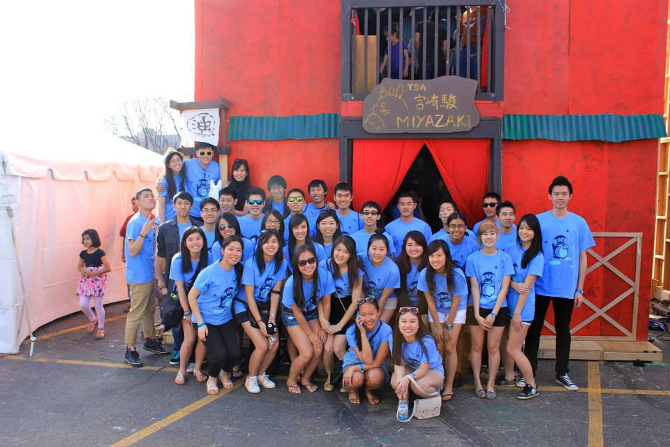
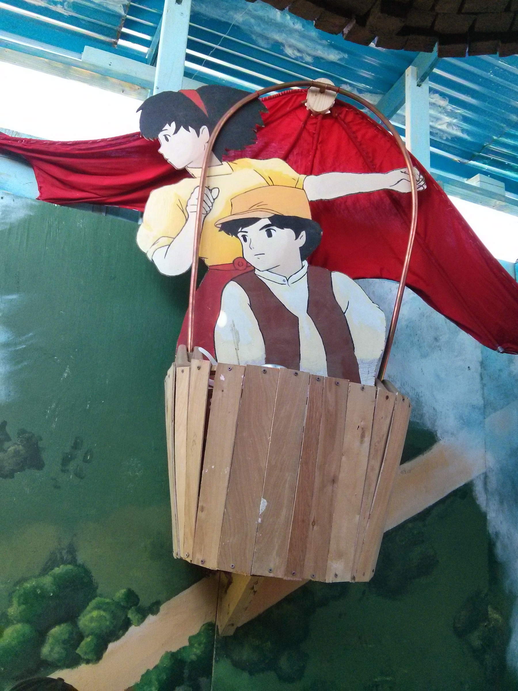
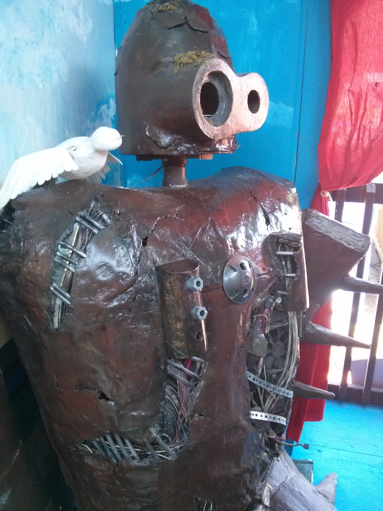
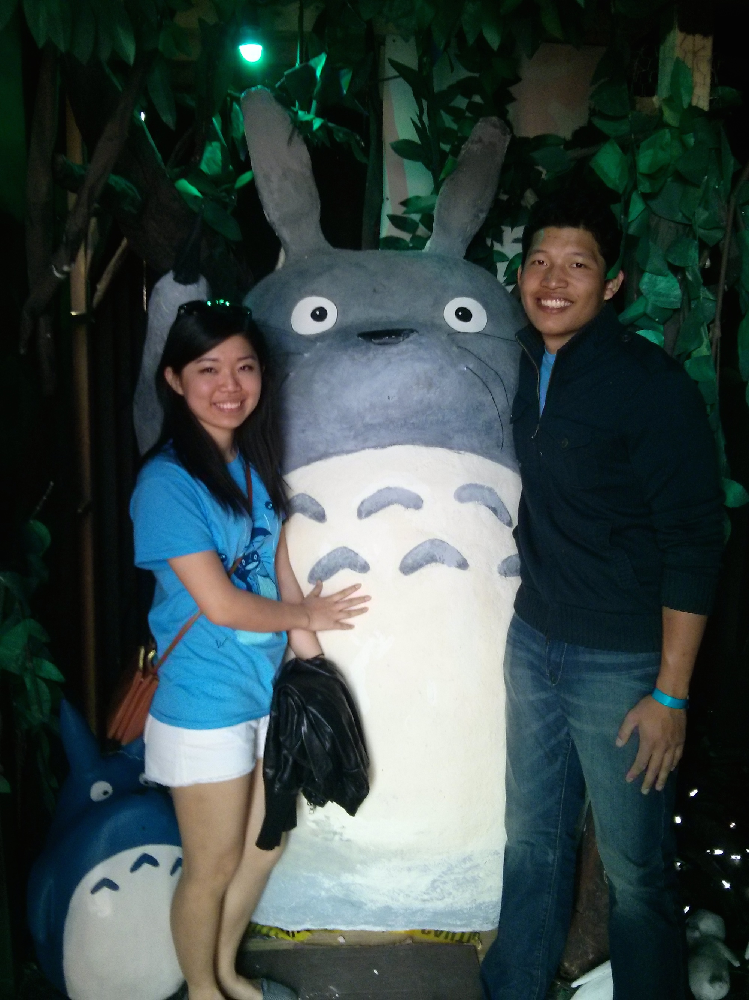
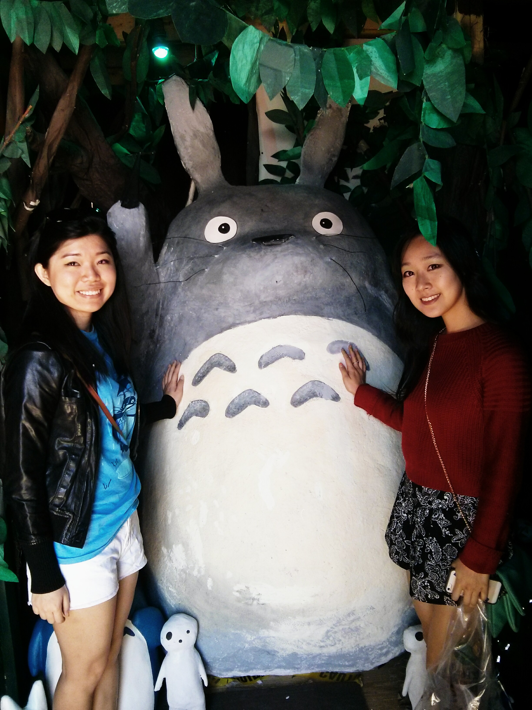
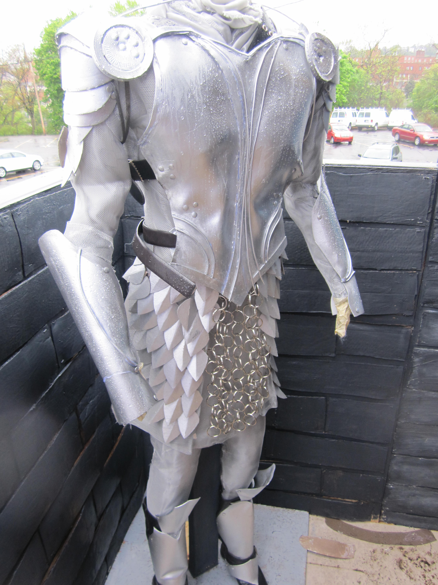
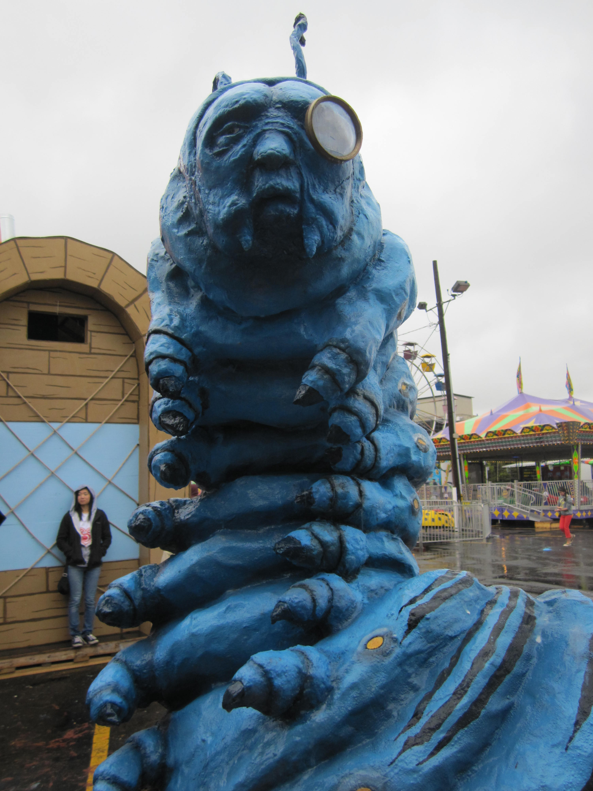
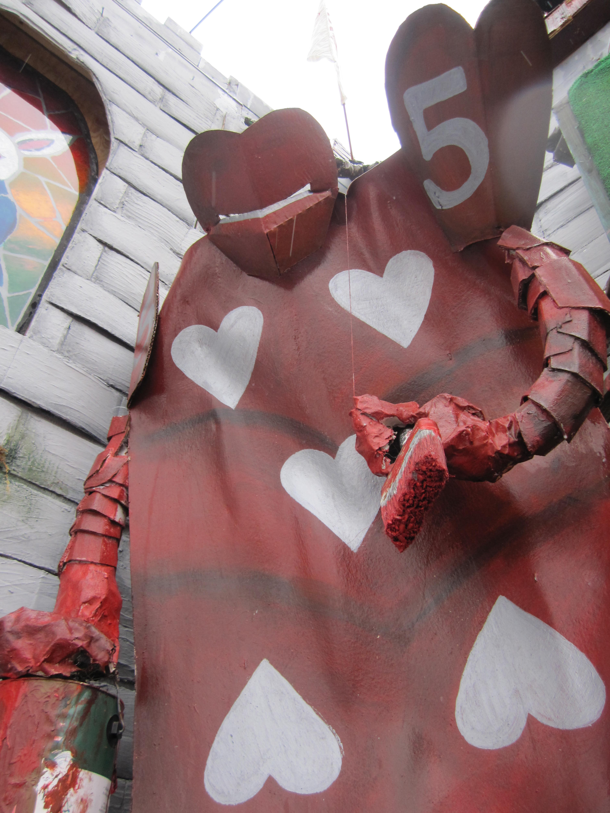
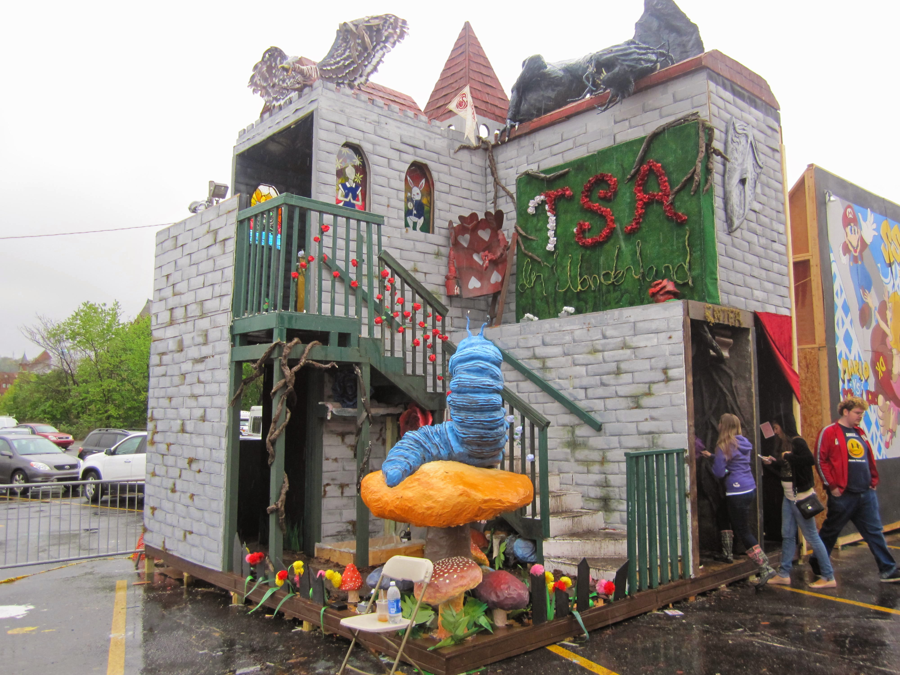

During my four years at CMU, I was an active member of the Taiwanese Students Association (TSA) and also served on the Executive Board for two years (Vice President my Junior year and Secretary my Sophomore year). Over the course of a school year, we would arrange numerous cultural events, participate in a variety of community service opportunities as well as plan large social outings.
TSA bonds over good Asian food, connect over volunteer work such as Relay for Life and also, come together as a team to participate in CMU's annual Carnival Booth event. Booth is a category of CMU's annual Spring Carnival, where student organizations around campus each build multi-storey structures to showcase their creative talent. Every year, a new theme is decided as a school, and each organization then selects a sub-topic to build upon (click here to learn more).
Every October, our group evaluated and selected booth themes, recruited for our Booth Committee, and planned out our timeline for the rest of the school year until Carnival in April. In the past four years, our booth themes have been: Oregon Trail 2011, Alice in Wonderland 2012, The Nutcracker 2013, and Miyazaki Movies 2014. Everything from the building structure to the tiniest of arts and crafts were handmade by myself and our members, taking into account the structural and electrical regulations, environmental friendliness, budgeting, and team work.
Here are some photos and a video that showcases the work that we have done.
        